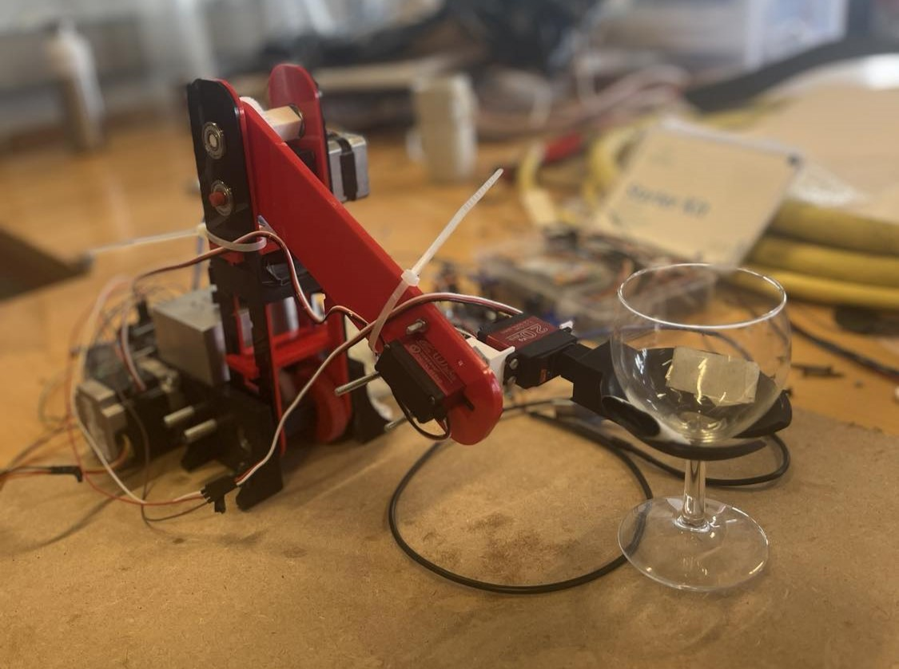

Markmið verkefnis
Markmið verkefnis var að kynnast tækifærum og takmörkunum á þrívíddarprentunum og þrívíddar skönnun. Verkefni 3 skiptist í 3 hluta, 3d skönnun, ákvörðun á hönnunarreglum og þvingunum og svo hönnun og 3d prentun á hlut að eigin vali.
3D skönnun
Í þessum hluta verkefnisins átti að 3d skanna einhvern hlut og skila inn niðurstöðunum. Í upphafi skoðaði ég hvaða 3d skönnunar forrit væru í boði sem ekki þurfti að borga fyrir. Ég frétti frá öðrum nemendum sem höfðu lokið við þennan hluta verkefnisins að Polycam væri hægt að nota frítt og tók ekki hundrað tíma að hlaða 3d skönnun niður. Ég valdi að 3d skanna mjólkurfernu á gólfi VR-3. Forritið virkar þannig að maður tekur myndir umhverfis hlutinn (200 max fyrir fría hlutann) og forritið býr til 3d skrá sem hægt er að skoða allan hringinn. Það tók forritið u.þ.b. 10 mínútur að hlaða þessari skrá upp. Helsta vesenið sem ég lenti í var að hlaða hlutnum niður þar sem forritið vildi alltaf að ég myndi borga fyrir aðganginn. Ég gafst þó ekki upp og hlóð hlutnum niður sem .mp4 myndbandsskrá. Síðar komst ég að því að ég gæti náð í hlutinn sem .glb skrá og það var einmitt það sem mig vantaði. Hér fyrir neðan er hægt að sjá afrakstur minnar fyrstu 3d skönnunar.
3D prentun
Í þessum hluta verkefnisins átti að hanna og 3d prenta hlut sem ekki væri hægt að framkvæma með frádráttar framleiðslu. Einnig átti að ákvarða hönnunarreglur á 3D-prentaranum sem hópaverkefni.
Hugmyndaleit og ákvörðun
Fyrst var planið hjá mér að 3D prenta lítinn lampa skerm með skemmtilegu útliti. Þá var skoðað Pinterest í leit af hugmyndum. Eftir smá leit og smá pælingar varðandi lampann ákvað ég að hætta allveg við þessa hugmynd. Ég ákvað að hanna kló fyrir áfangann Tölvustýrður Vélbúnaður (VÉL205M) þar sem átti að búa til tölvustýrðan arm sem gæti lift vínglasi og hallað því svo hægt væri að drekka úr glasinu. Hugmyndin mín að kló sem gæti gripið glasið var að hanna eins konar skál sem færi undir glasið og gæti lift því beint upp. Á eftirfarandi mynd er hægt að sjá vínglasið sem hönnunin á klónni var gerð eftir.
Hönnun á kló
Við hönnunina á klónni notaði ég Inventor þar sem ég kann mest á það teikningar-forrit. Hönnunarforsendurnar voru þær að það þurfti að vera rifa stærri enn 1,5 cm fyrir haldið á vínglasinu og klóin ætti að vera u.þ.b. með 45° halla utan um glasið. Klóin þurfti einnig að geta fest í mótorinn til að snúa glasinu svo það var gerður kassi aftaná klónna sem átti að passa fyrir mótorinn. Eftirfarandi er klóin sem .glb skrá.
Uppsetning í Prusa Slicer
Til þess að gera hlutinn tilbúinn í 3D prentun er notast við forritið Prusa Slicer. Áður enn ég byrjaði þurfti ég að velja réttan prentara og breidd prent stúts. Fyrir þetta verkefni var notast við Prusa MK3+ með 0,4 mm stút. Fyrir prentið ákvað ég að 15 % infill væri nógu sterkt fyrir klónna enn ég þurfti þó að prenta með stuðningi undir skálinni, þar sem það er 90 gráðu halli á stóru svæði þar. Ekki var notast við stuðning undir gatinu aftaná fyrir mótorinn. Prentað var með svörtu PLA efni og prentið tók rúmar 2 klst. Þegar allt var klárt í Prusa Slicer var hægt að hlaða niður G-kóða fyrir hlutinn sem Prusa MK3+ nær að lesa.
Niðurstaða
Niðurstaða 3D prentsins var frammúr öllum væntingum og þetta heppnaðist virkilega vel. Stuðningurinn undir skálinni small auðveldlega úr og allt var fullkomið. Þá var ekki annað í stöðunni enn að máta þetta á mótorinn og viti menn... Þetta smellpassaði bara líka. Stærsta spurningin var, þegar öllu var lokið, hvort það hefði virkað að prenta þetta án stuðnings undir skálinni. Svarið við því er hálfgert nei þar sem ég var búinn að prófa að gera helmingi minni skál án stuðnings og það fór að síga fyrir miðju. Það gæti hinsvegar verið af því þá var verið að nota grátt PLA efni sem fleyrri höfðu lent í vandræðum með.


Hér að ofan er hægt að sjá mynd og myndband af klónni á arminum sjálfum og sýnir myndbandið að klóin svín virkar. Til þess að hlaða myndbandinu hingað upp þurfti ég að breyta .mp4 skrá í .gif með gif converter.
Tímatafla
| Lýsing á hluta verkefnis | Tími [klst] |
|---|---|
| 3D skönnun | 1,5 |
| Hugmyndavinna fyrir 3D prent | 6 |
| Hönnun fyrir 3D prent í Inventor | 3 |
| Uppsetning í Prusa Slicer og læra á forritið | 3,5 |
| Prufa fyrir 3D prentun | 0,5 |
| 3D prentun | 2 |
| Skráning á heimasíðu | 5 |
| Heildar tími í klst | 21,5 |